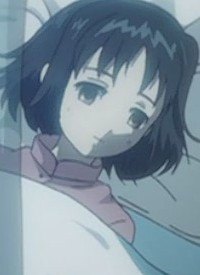

|
Alanna |
- Pokemon Advanced Generations
|
Alanna is a girl that Ash and Co. meet in Hoenn region. She has a Whismur. |
 |
Cheryl |
|
Cheryl is a descendant of a family of treasure hunters. She thinks highly of her grandfather advice. |
 |
Fiona |
|
Fiona is the sole survivor of the small century of Ikstova's royal family. She has a great passion for photography. |
|  |
Francesca |
|
Francesca is the twin sister of Fiona. She was princess to the Ikstova's royal family. |
 |
Hinako Inui |
- Food Wars!
- Food Wars! The Second Plate
|
Hinako Inui is an 80th Generation Tootsuki Academy alumnus and a previous second seat of the Elite Ten Council. She owns a Japanese restaurant named Kirinoya. She cares about the quality of food. Behind her mature, stern and professional personality, but can be childish. |
 |
Mavis Vermilion |
- Fairy Tail
- Fairy Tail OVA
- Fairy Tail (2014)
- Fairy Tail OVA (2016)
|
Mavis Vermillion is the First Master and Founder of the guild, Fairy Tail. Mavis grew up on Tenrou Island. She is kind and protective of Fairy Tail. She is carefree, reckless, playful and childish. |
| |
Molly |
- Recovery of an MMO Junkie
|
Molly is a character that Moriko created. |
 |
Moriko Morioka |
- Recovery of an MMO Junkie
- Recovery of an MMO Junkie Special
|
Moriko Morioka is a 30 year old woman who became a NEET after quitting her job. She is an introverted and quiet person. She is extremely shy and avoids human contract. Moriko has low self-esteem and speaks little in a polite manner. |
 |
Saki Arima |
- Your Lie in April
- Your Lie in April OVA
|
Saki Arima is mother of Kousei Arima. She was a well-known pianist across Japan until her illness. She beating him for his small mistake because she want him to be able to survive on his own. |